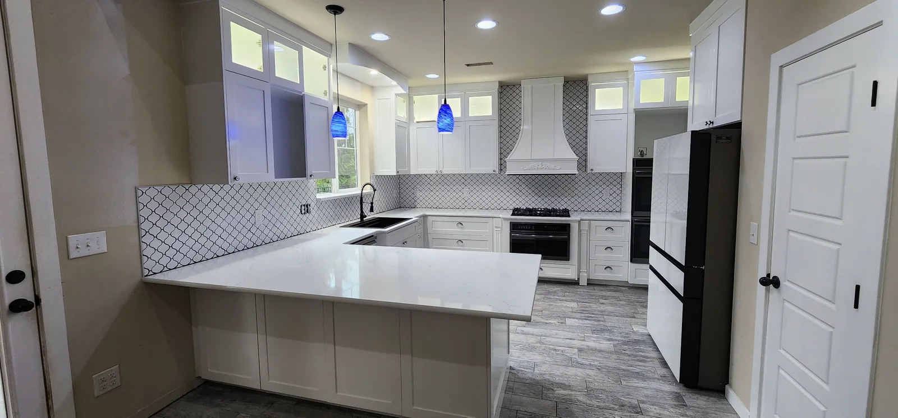
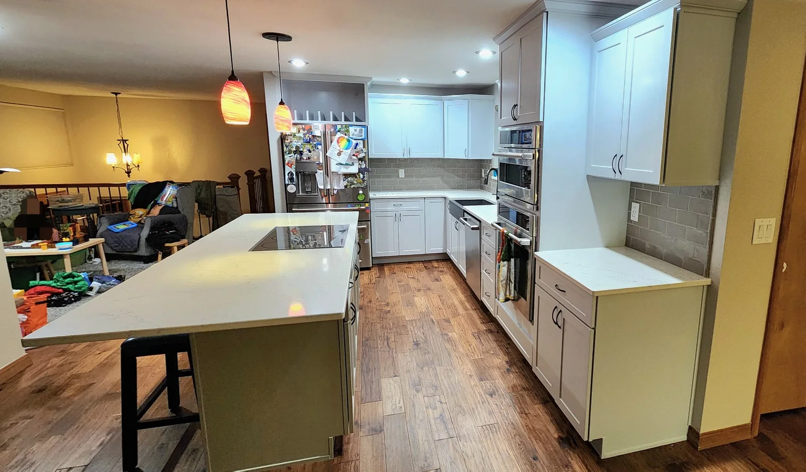
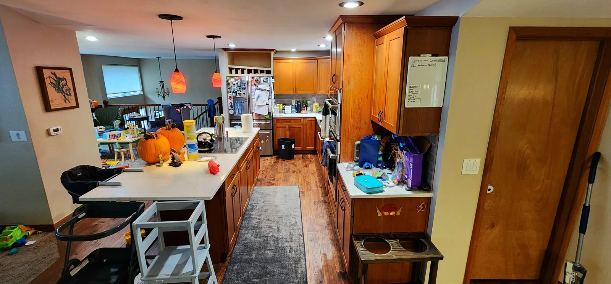
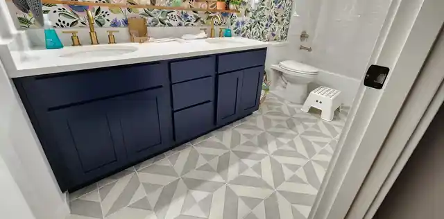
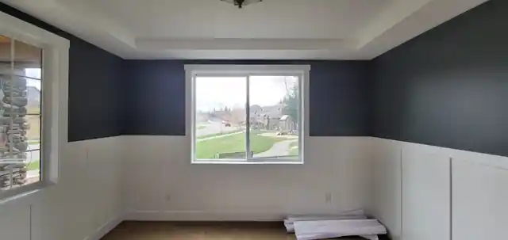
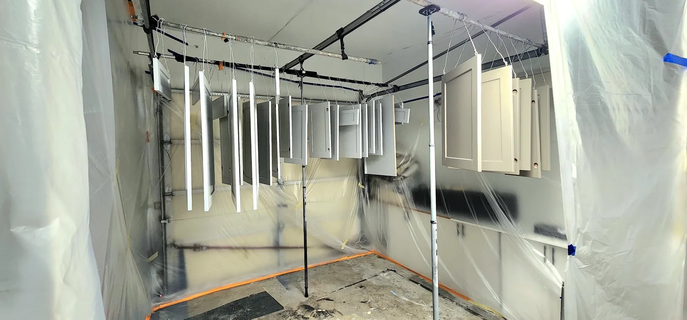
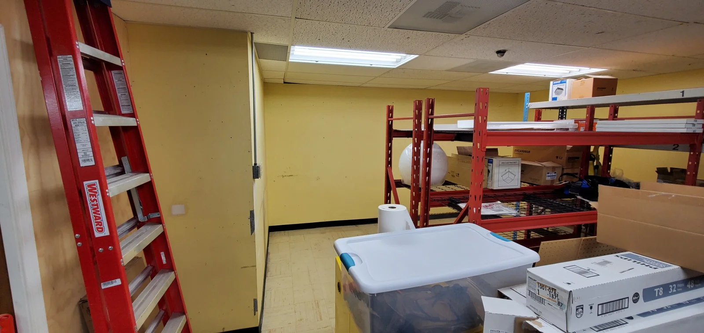
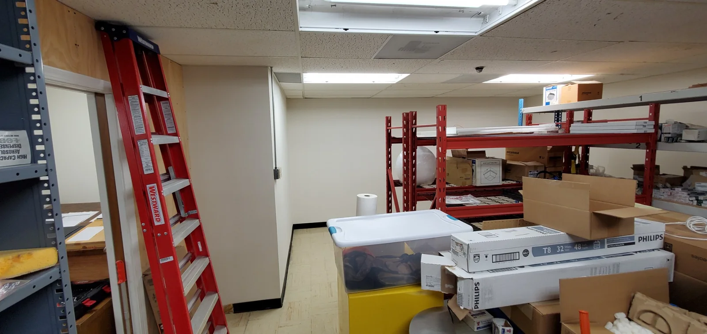

Interior Painting
Walls, ceilings, trim, doors and detailed finishes for occupied or vacant spaces.

Seattle & King County
Premium residential and commercial painting with careful preparation, clean execution and finishes built to impress.
Painting is an art.
SEACOL Fine Painting serves homeowners, property managers and businesses throughout Seattle and King County. We combine disciplined surface preparation, professional protection and precise application to deliver a finish that looks intentional—not merely newly painted.
See our process →Our services
From a single vanity to a large commercial interior, every project receives a clear scope, careful preparation and an orderly closeout.
Walls, ceilings, trim, doors and detailed finishes for occupied or vacant spaces.
Protective coatings and complete exterior transformations for Northwest conditions.
Fine-finish cabinet systems with controlled masking, spraying and careful reassembly.
Bookcases, entertainment centers, vanities, shelving and architectural details.
Offices, studios, retail and high-traffic spaces with organized scheduling and protection.
Patching, sanding, caulking, priming and surface correction before finish coats.
Featured transformation
Use the slider to compare the original wood finish with the completed refinishing project.


Real SEACOL transformations
A first collection of documented SEACOL projects. Cabinet refinishing, custom built-ins and detailed interior finishes—completed with the preparation and protection standards behind every SEACOL finish.

A bright white vanity transformed into a deep navy architectural finish, creating a stronger contrast with the brass fixtures and patterned interior.
View gallery →Raw custom cabinetry finished in a clean furniture-grade white, with crisp lines and a controlled finish designed to feel integrated with the room.
View gallery →
A dated multi-color room refined with a dramatic dark upper wall and crisp white architectural wainscoting for a more intentional, finished space.
View gallery →Selected work
A first selection from our growing project library. Additional interior, exterior and specialty work will be added as the portfolio expands.

Our process
We review surfaces, access, repairs, product requirements and the desired finish.
Floors, fixtures and adjacent areas are protected before repairs, sanding and priming.
Brush, roll or spray methods are selected according to the surface and finish standard.
We inspect details, complete touch-ups, remove protection and leave the project organized.
Commercial restoration
This storage area required extensive patching and surface correction before repainting. The final coat is only as reliable as the surface beneath it.


The SEACOL standard
From the first conversation to the final walkthrough, clear communication, respect for your space and reliable follow-through are part of the work—not add-ons. Ready to start? Complete the form and your phone will open a prepared text message to SEACOL.